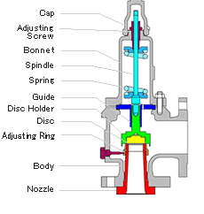
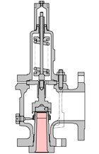
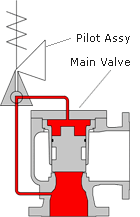
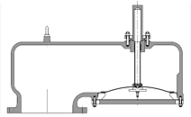

- What is Safety Valve?
- Products and Catalogue Download
- Service Network
- Approvals and Ship Classification
What is Safety Valve?
A safety valve protects pressure vessels, boilers, chemical plant and gas storage systems from over-pressure damage. It opens automatically when inlet pressure reaches a set point, discharges steam or gas to reduce pressure, then reseats when conditions return to a safe level — without requiring external power.
As a final line of defence, safety valves safeguard both industrial plant and the people who depend on reliable energy and process systems. FUKUI supplies spring-loaded, pilot-operated and dead-weight designs for applications across the UK and Europe.
( Role of the spare parts ) |
Components of the Safety Valve |
|---|---|
 |
There are three kinds of Safety Valves in FUKUI production line.
Spring-loaded Pressure-relief Valves

Generally, the safety valveｓ are referred to the Spring-loaded Pressure-relief valves, the most common type ( See the left figure ).The load of the spring is designed to press the "Disc" against the inlet pressure.
Depending on the fluid type, such as steam, gas or liquid, we are offering a Bellows model to clear the back pressure effect.
Pilot-operated Pressure-relief Valves

Pilot-operated Pressure-relief Valves are composed of Pilot Assy and Main Valve. Although Spring-loaded Pressure-relief valves adopts the force of the spring against the inlet pressure, the reliving pressure and reseating pressure of the Pilot-operated Pressure-relief Valves is controlled by Pilot Assy, which acts nearly as same as Spring-loaded Pressure-relief valves. There is no adjusting function in the Main Valve.Pilot-operated Pressure-relief Valves have larger size variations compared to Spring-loaded type, which is applied in a severe condition such as high pressure.
Dead-Weight Pressure-relief Valves

In case the design pressure of the pressure vessel is set at very low pressure, Dead-weight Pressure-relief valve adjusts relieving pressure only by the disc weight.The Vacuum relief valve has been adopting this functional characteristic which absorbs the pressure when the inside of the pressure vessel falls into a negative pressure.